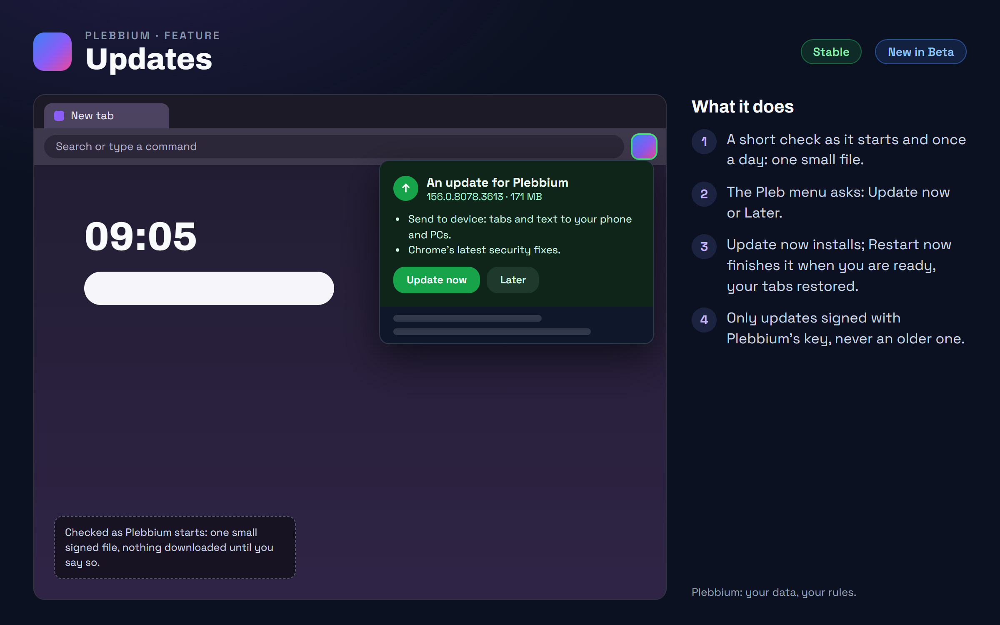

All features › Shipped › Updates
Updates
StableNew in Betasince 3604Plebbium checks for updates as it starts and once a day, reading one small file and downloading nothing. When something is new, the Pleb menu opens and asks; Update now downloads and installs it, then Restart now finishes it when you are ready, your tabs restored.

How to use it
- When the Pleb menu opens with an update, press Update now, or Later to be asked at the next start.
- Check yourself: Plebbium settings › Updates › Check now.
- Stable or Beta: Plebbium settings › Updates.
When it arrived
156.0.8078.360418 Oct 2026 · Beta and Stable
Signed updates, on Stable and Beta.
156.0.8078.361222 Oct 2026 · Beta and Stable
Updates ask first: the Pleb menu opens with Update now.
Features 0.9.2Beta 30 Oct 2026 · not on Stable yet
An installed update waits for Restart now instead of restarting by itself, and the Pleb menu reminds you when Plebbium opens again.
Why it works this way
Signed, so only Plebbium's
Every update is checked against a signature by a key only Pleb has; anything else, or anything older than what you run, is refused.
Asks first
A check costs about 2 KB and never downloads anything by itself; an update that's already installed is never fetched again.
Two lanes
The whole browser, with Chrome's security fixes, or just Pleb's features, which are small and quick.